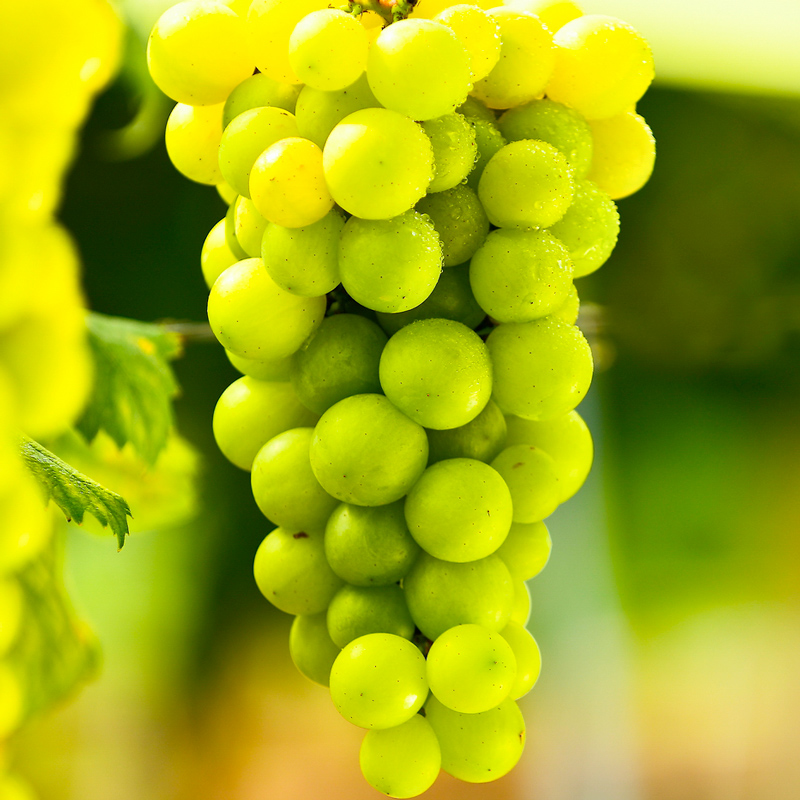

淘宝！萄宝！拥有属于你的萄宝，认养一颗葡萄树（黄玫瑰）
 淘宝！萄宝！拥有属于你的萄宝，认养一颗葡萄树（黄玫瑰）
热情奔放，野性绽放，灿烂的金色玫瑰秒杀你的理性。外表金黄，果粒匀称，由内到外散发的玫瑰香味，脆甜多汁的细脆果肉美妙到让你疯狂。
只需要598元，您就可以拥有黄玫瑰萄宝的一年。
您可以选择以下收益方式：
1、亲临葡萄园采摘和游玩；
2、荆秋缘葡萄园代为采摘，并按您的要求配送到指定地点（不建议发送到湖北省外）；
3、荆秋缘葡萄园代为采摘酿，制成葡萄酒（赠送您精美酒瓶和个性化瓶贴），代为保存或配送到您指定的地点；
您的收益，还包括：
1，您可以为自己的萄宝取名。荆秋缘葡萄园将提供给您认养证明给您并注明葡萄树名字。您可以要求在葡萄树适当位置悬挂上述名字以宣示您的所有权。
2，您及您的亲友可以亲临园中采摘鲜果，也可以委托荆秋缘葡萄园代为采摘并快递，还可以委托荆秋缘葡萄园代为酿酒。（不同品种酿酒产出率不同）荆秋缘葡萄园不收取代办费、加工费，仅对实际产生的辅料或包材收费。您采摘所需包装可选择荆秋缘葡萄园免费提供款式也可以自行提供。
3，如您或亲友从外地来庄园采摘或休闲，荆秋缘葡萄园将提供荆州火车站与庄园间免费交通服务（可享受每年一次）。
其它约定
1、因气候等自然条件差异，每年葡萄成熟具体时间可能会略有不同，荆秋缘葡萄园将在葡萄成熟一周前通知您。请您按时采摘或有效委托荆秋缘葡萄园代为处理。
2、若在养护过程中，您所认养的葡萄树死亡，荆秋缘葡萄园会及时安排补种，并用同一园区内同品种葡萄树替代实现当年甲方收益。若不能替代实现的，您可以选择退款或者延续到下一年兑现。
3、荆秋缘葡萄园将定期在”金秋农业“”荆州味道“微信号及企业网站发布被认养的葡萄树所在园区的视频资料。如果您有需要，也可以联系微信号或者认养微信群的工作人员协助您和您的葡萄树直接视频，连线频率根据具体情况确定。